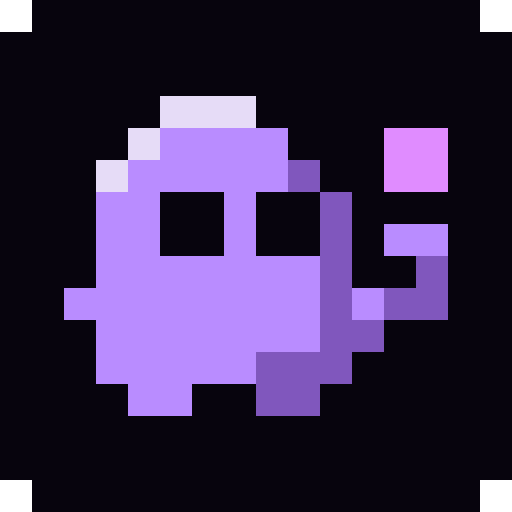
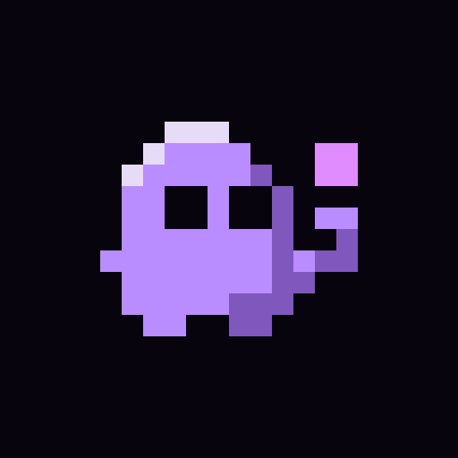
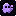
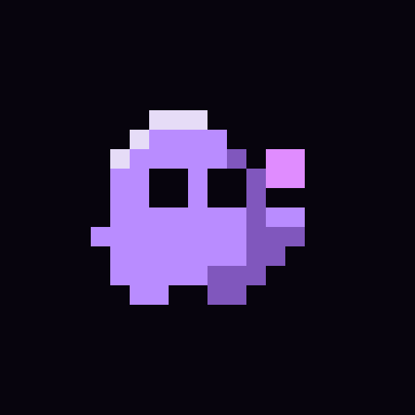

C2REFERENCEMY PICK

Our original keeper
The familiar little blob, curious eyes and floating pink pixel.
16 px
32 px
48 px
 app crop
app cropspritewright ×
spritewright ×
The original reaching hand is only one pixel wide.
Small refinements to C2: the same curious face, a clearer little hand.
The familiar little blob, curious eyes and floating pink pixel.
app cropThe original reaching hand is only one pixel wide.

Same face and body. An open palm directly below the pixel makes the gesture easier to see.

app cropMy pick: keeps his personality with only four changed pixels.
The pink pixel sits closer to his cheek; a shorter arm and tiny palm keep everything together.

16 px
app cropMore compact at small sizes; the floating pixel has less breathing room.